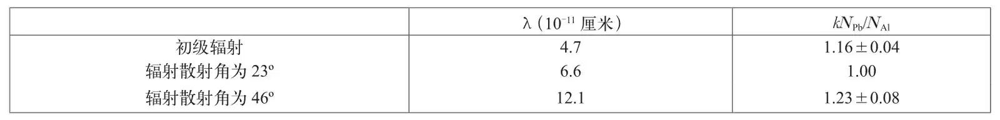

英文
英文编者按
两位来自国立清华大学的中国物理学家在文中介绍了他们用硬γ射线将铅和铝中的电子轰击出来的实验。他们认为实验数据说明γ射线引发了某种形式的核衰变。然而，欧内斯特·卢瑟福在这篇论文后面的简短评论中指出：从作者随论文邮寄给他的一封信中可以明显看出，他们还不知道最近的一项研究成果，即在原子核附近的强场中，高能γ射线会产生电子–正电子对。卢瑟福认为用产生正负电子对来解释两位中国物理学家的实验结果也许会显得更合理一些。 英文
众所周知，当一束由钍C″放射出的硬γ射线穿过铅时，除了出现铅的外层电子对γ射线的吸收以外，还会出现铅原子核对γ射线的吸收，并伴随着发出和初级辐射具有不同频率的特征辐射[1]。这种特征辐射的强度已经被估算过了，即放射出的特征辐射的总能量远远小于被原子核吸收的初级辐射的总能量[2]。我们可以预见，如果假设原子核在这一过程中发生了衰变，那么原子核吸收的一部分能量就会在此过程中被消耗掉。从这种观点出发，我们测量了由初级γ粒子从铅原子核中打出来的电子。 英文
我们在实验中采用的γ射线源是镭–钍合成的放射源，相当于10毫克的镭放射源。所使用的两个盖革–缪勒计数器，一个是铝壁，另一个是铅壁。两个计数器具有相同的内壁尺寸，并且每平方厘米壁的质量也大约相等（即0.92毫米厚的铝计数器和0.22毫米厚的铅计数器）。用NAl和NPb分别表示在相同的时间间隔内，由给定的γ射线在铝计数器和铅计数器中产生的电子数目。比值NPb/NAl是入射γ射线波长λ的函数，在开始阶段由于铅的光电吸收不断减弱，所以将会随着λ的减小而减小。然而，当波长λ进一步减小时，比值NPb/NAl可能反而会变大。这是因为波长小于某个特定值的γ粒子可能会引起重铅核的衰变，在铅核衰变过程中放射出来的电子会增加NPb的值。 英文
将一束由钍C″放射出的γ射线用2厘米厚的铅板过滤，再经过铁散射到不同的方向，我们测量了对应不同波长γ射线的NPb/NAl比值。下表中给出了相关的实验结果，其中NPb/NAl要乘以一个常数k，这样，我们把在辐射射线散射角度为23º时的kNPb/NAl值作为单位1。 英文

在上面的表格中，λ=6.6×10－11厘米时的NPb/NAl值小于λ=12.1×10－11厘米时的相应值，而当λ=4.7×10－11厘米时，如我们所预料的那样，硬γ射线引发铅核放射出电子，从而使NPb/NAl值增大。这个比值在λ=4.7×10－11厘米时与λ=6.6×10－11厘米时相差大约16%。也许有人认为，当λ=4.7×10－11厘米时比值NPb/NAl的增加还有可能是由于铅核和铝核对入射γ射线在计数器管壁上产生的康普顿反冲电子的散射效应的差别导致的。如果真是这样的话，那么λ=6.6×10－11厘米和4.7×10－11厘米时的NAl/NPb值之差在使用管壁较厚的计数器时应该更加显著，因为散射效应会随着管壁的增厚而增强。但是，当我们使用壁厚为0.3毫米的铅计数器和壁厚为1.2毫米的铝计数器重复上面的实验时，我们得到了相同的结果，也就是两个NPb/NAl比值之间仍相差约16%。这样看来，以上结果支持了硬γ射线引发铅核发生衰变的观点。 英文
实验的具体细节将发表在其他地方。 英文
赵忠尧，龚祖同
* * *
从与以上这篇通讯一块寄给我的信中可以明显看出，赵教授和龚先生还不知道最近关于正电子的研究工作，特别是关于在一个原子核的强电场中，高能γ射线可以转化产生一对电子，即一个正电子和一个负电子的情况。他们描述的实验又一次为这一现象提供了非常有价值的证据，毫无疑问，该实验现象应该被他们解释为高能γ射线产生了正负电子对，而不是原子核的衰变。值得注意的是，这一效应的强度与在其他实验中观测到的强度大致相同。 英文
卢瑟福
（王静 翻译；尚仁成 审稿）